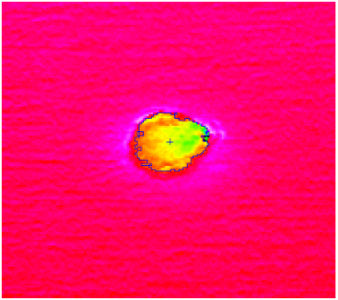

凹凸缺陷检测工具主要检测3D平面上的缺陷区域，通过设置高度缺陷阈值和缺陷检测模式（凹缺陷、凸缺陷、凹凸连接缺陷和凹凸分开缺陷），计算深度数据点到平面的高度获取缺陷检测模式下的高度缺陷区域，工具显示检测到高度缺陷区域（轮廓线包围区域）的效果如图1所示。

| 参数名称 | 参数描述 |
|---|---|
| 输入图像 | 用来实时检测的输入图像。 |
| 输入基准平面 | 指不包含高度缺陷的拟合平面，用于计算深度数据的相对高度。 |
| 输入基准图像 | 指不包含高度缺陷的基准图像，用于计算深度数据的相对高度。 |
| 二维线性变换 | 输入的定位二维线性变换结果，以根据其变换相应的检测区域 |
| 参数名称 | 参数描述 |
|---|---|
| 基准类型 | 分为2种：基准平面和基准图像。既可以基于基准平面执行高度检测，也可以基于自由曲面图像执行高度检测。 |
| 基准图像来源 | 基准类型为基准图像下，设置基准图像来源，分为数据链接和工具内部设置两项。 |
| 抽取方向 | 分为3种：X方向、Y方向和XY方向，基准图像来源类型为工具内部设置时有效。 |
| 抽取大小 | 指定要抽取高度缺陷的大小，基准图像来源类型为工具内部设置时有效。 |
| 使用ROI外数据 | 选择是否参照范围外图像抽取自由曲面，基准图像来源类型为工具内部设置时有效。 |
| 基准图像ROI类型 | 待检测区域，分为8种：整幅图像、矩形、仿射矩形、圆形、圆环、椭圆、多边形、多仿射矩形，基准图像来源类型为工具内部设置时有效。 |
| 基准图像仿射矩形ROI个数 | 基准图像仿射矩形个数，基准图像来源类型为工具内部设置时有效。 |
| ROI类型 | 待检测区域，分为8种：整幅图像、矩形、仿射矩形、圆形、圆环、椭圆、多边形、多仿射矩形。 |
| 仿射矩形ROI个数 | 仿射矩形个数。 |
| 高度缺陷阈值 | 设定点到拟合平面距离的最大值，允许深度数据点到基平面的最大高度值，大于高度缺陷阈值的深度数据点为高度缺陷点。 |
| 检测缺陷类型 | 分为4种：凸、凹、凹凸连接、凹凸分开。 |
| 结果过滤 | 可以根据区域面积、体积、平均高度、最大高度进行过滤。 |
| 结果是否排序 | 结果是否进行排序。 |
| 结果排序方式 | 分为2种：降序和升序。 |
| 结果排序参数 | 分为4种：面积、体积、平均高度、最大高度。 |
| 缺陷块个数判定 | 开启/关闭缺陷区域个数判定。 |
| 缺陷块个数最大值 | 当前检测到缺陷区域个数大于该值，判定NG。 |
| 面积上限 | 可以根据区域面积进行判定，只有检测到的缺陷在设置范围内执行成功，否则判定NG，取值范围为[0.000000, 100000.000000]，且下限应小于等于上限。 |
| 面积下限 | 可以根据区域面积进行判定，只有检测到的缺陷在设置范围内执行成功，否则判定NG，取值范围为[0.000000, 100000.000000]，且下限应小于等于上限。 |
| 体积上限 | 可以根据区域体积进行判定，只有检测到的缺陷在设置范围内执行成功，否则判定NG，取值范围为[0.000000, 100000.000000]，且下限应小于等于上限。 |
| 体积下限 | 可以根据区域体积进行判定，只有检测到的缺陷在设置范围内执行成功，否则判定NG，取值范围为[0.000000, 100000.000000]，且下限应小于等于上限。 |
| 平均高度上限 | 可以根据区域平均高度进行判定，只有检测到的缺陷在设置范围内执行成功，否则判定NG，取值范围为[0.000000, 1000.000000]，且下限应小于等于上限 |
| 平均高度下限 | 可以根据区域平均高度进行判定，只有检测到的缺陷在设置范围内执行成功，否则判定NG，取值范围为[0.000000, 1000.000000]，且下限应小于等于上限 |
| 最大高度上限 | 可以根据区域最大高度进行判定，只有检测到的缺陷在设置范围内执行成功，否则判定NG，取值范围为[0.000000, 1000.000000]，且下限应小于等于上限 |
| 最大高度下限 | 可以根据区域最大高度进行判定，只有检测到的缺陷在设置范围内执行成功，否则判定NG，取值范围为[0.000000, 1000.000000]，且下限应小于等于上限 |
| 长度上限 | 可以根据区域长度进行判定，只有检测到的缺陷在设置范围内执行成功，否则判定NG，取值范围为[0.000000, 1000.000000]，且下限应小于等于上限 |
| 长度下限 | 可以根据区域长度进行判定，只有检测到的缺陷在设置范围内执行成功，否则判定NG，取值范围为[0.000000, 1000.000000]，且下限应小于等于上限 |
| 宽度上限 | 可以根据区域宽度进行判定，只有检测到的缺陷在设置范围内执行成功，否则判定NG，取值范围为[0.000000, 1000.000000]，且下限应小于等于上限 |
| 宽度下限 | 可以根据区域宽度进行判定，只有检测到的缺陷在设置范围内执行成功，否则判定NG，取值范围为[0.000000, 1000.000000]，且下限应小于等于上限 |
| 长宽比上限 | 可以根据区域长宽比进行判定，只有检测到的缺陷在设置范围内执行成功，否则判定NG，取值范围为[0.000000, 1000.000000]，且下限应小于等于上限 |
| 长宽比下限 | 可以根据区域长宽比进行判定，只有检测到的缺陷在设置范围内执行成功，否则判定NG，取值范围为[0.000000, 1000.000000]，且下限应小于等于上限。 |
| 稠密度上限 | 可以根据区域稠密度进行判定，只有检测到的缺陷在设置范围内执行成功，否则判定NG，取值范围为(0.000000, 1.000000]，且下限应小于等于上限 |
| 稠密度下限 | 可以根据区域稠密度进行判定，只有检测到的缺陷在设置范围内执行成功，否则判定NG，取值范围为(0.000000, 1.000000]，且下限应小于等于上限 |
| 划伤度上限 | 可以根据区域划伤度进行判定，只有检测到的缺陷在设置范围内执行成功，否则判定NG，取值范围为[0.000000, 1000.000000]，且下限应小于等于上限 |
| 划伤度下限 | 可以根据区域划伤度进行判定，只有检测到的缺陷在设置范围内执行成功，否则判定NG取值范围为[0.000000, 1000.000000]，且下限应小于等于上限 |
高级界面参数与属性窗口参数一致。
| 参数名称 | 参数描述 |
|---|---|
| 基准图像 | 基准图像来源类型为工具内部设置时，输出内部计算的基准图像。 |
| 缺陷类型标示 | 高度缺陷的类型标志，其中，0代表凹缺陷、1代表凸缺陷、2代表凹凸缺陷。 |
| 二维质心坐标 | 高度缺陷的二维质心（图像）坐标。 |
| 三维质心坐标 | 高度缺陷的三维质心（物理）坐标。 |
| 缺陷平均高度 | 高度缺陷的平均高度。 |
| 缺陷最大高度 | 高度缺陷的最大高度。 |
| 缺陷面积 | 高度缺陷的面积。 |
| 缺陷体积 | 高度缺陷的体积。 |
| 缺陷长度 | 高度缺陷的长度。 |
| 缺陷宽度 | 高度缺陷的宽度。 |
| 缺陷长宽比 | 高度缺陷的长宽比。 |
| 缺陷稠密度 | 高度缺陷的稠密度。 |
| 缺陷划伤度 | 高度缺陷的划伤度。 |
| 缺陷点数量 | 高度缺陷点的数量。 |
| 参数名称 | 参数描述 |
|---|---|
| 基准图像 | 基准图像来源类型为工具内部设置时，输出内部计算的基准图像。 |
| 缺陷类型标示 | 高度缺陷的类型标志，其中，0代表凹缺陷、1代表凸缺陷、2代表凹凸缺陷。 |
| 二维质心坐标 | 高度缺陷的二维质心（图像）坐标。 |
| 三维质心坐标 | 高度缺陷的三维质心（物理）坐标。 |
| 缺陷平均高度 | 高度缺陷的平均高度。 |
| 缺陷最大高度 | 高度缺陷的最大高度。 |
| 缺陷面积 | 高度缺陷的面积。 |
| 缺陷体积 | 高度缺陷的体积。 |
| 缺陷长度 | 高度缺陷的长度。 |
| 缺陷宽度 | 高度缺陷的宽度。 |
| 缺陷长宽比 | 高度缺陷的长宽比。 |
| 缺陷稠密度 | 高度缺陷的稠密度。 |
| 缺陷划伤度 | 高度缺陷的划伤度。 |
| 缺陷点数量 | 高度缺陷点的数量。 |
| 执行结果 | 工具执行结果。 |
| 执行时间 | 工具执行时间。 |
可以基于基准平面执行高度检测, 也可以基于自由曲面图像执行高度检测。
基准平面模式：主要是基于计算点到平面的高度，通过设置高度缺陷阈值和缺陷检测模式获得深度图像中的高度缺陷区域，并求取高度缺陷的检测结果。
基准图像模式：主要是自由曲面作为基准图像，取自由曲面图像与深度图像的高度差大于去除阈值的数据作为高度缺陷区域，并求取高度缺陷的检测结果。
参数设置主要由高度缺陷阈值、缺陷检测模式组成。高度检测阈值指的是设定点到拟合平面距离的最大值，允许深度数据点到基平面的最大高度值，大于高度缺陷阈值的深度数据点为高度缺陷点；缺陷检测模式主要包括凸、凹、凹凸连接、凹凸分开，其中：
凹缺陷：指高度缺陷检测时，检测深度数据中明显低于所在平面的点，即深度数据点到基平面的高度值小于0 ，且高度值的绝对值大于高度缺陷阈值的区域，如图2中黄色点所示。
凸缺陷：指高度缺陷检测时，检测深度数据中明显高于所在平面的点，即深度数据点到基平面的高度值大于0 ，且高度值的绝对值大于高度缺陷阈值的区域，如图2中红色点所示。
凹凸分开缺陷：指高度缺陷检测时，同时检测凹缺陷和凸缺陷，相连的凹凸缺陷会被单独分开检测。
凹凸连接缺陷：指高度缺陷检测时，同时检测凹缺陷和凸缺陷，相连的凹凸缺陷会被视为一个缺陷，如图2所示。
对于检测到的缺陷区域可以根据区域面积、体积、平均高度、最大高度进行过滤，其中：
分为2种方式，一是缺陷区域块个数判定，只有检测到的缺陷在不大于设定值执行成功，否则判定NG；二是可以根据缺陷区域面积、体积、平均高度、最大高度进行结果判定，只有检测到的缺陷在设置范围内执行成功，否则判定NG。同时，也可以不设置判定条件，通过脚本读取结果进行其他方式灵活判定。
参见“\Samples\3D\深度图\凹凸缺陷检测工具.gvp”。